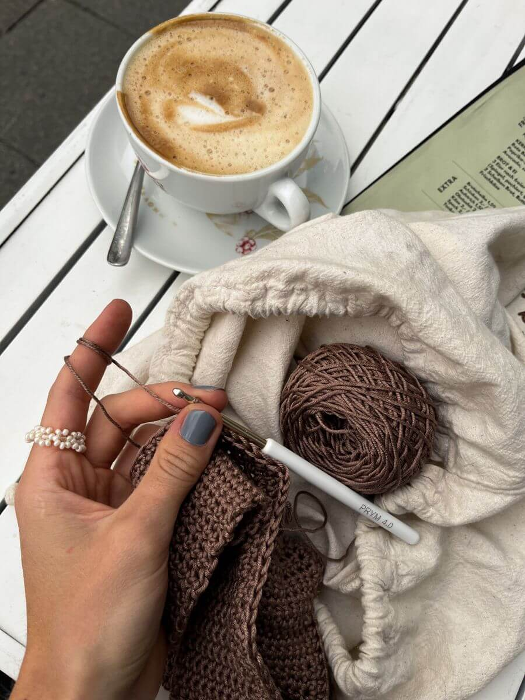
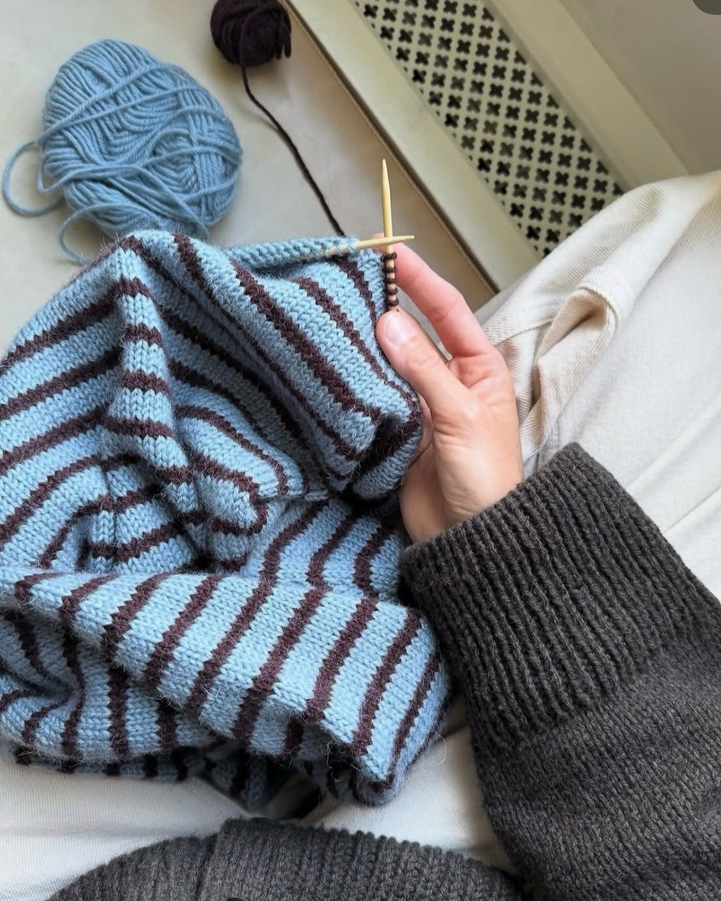

At The Yarn Corner, we make learning how to crochet and knit simple and accessible for beginners. Explore essential supplies with easy purchasing guides, browse a collection of free and premium patterns, and follow linked YouTube tutorials for step-by-step visual instruction. Everything you need is right here in one convenient spot to kickstart your crafting adventure!
What is Crochet?

Crochet involves yarn and a hooked needle...that truly is all you need to get started! With these two items, the possibilities for what you can make are unlimited. From coasters, to bags, to blankets, crochet has a wide variety of techniques and stitches which allow crocheters to make anything they could possibly desire.Click here for more!
What is Knitting?

Knitting requires two needles and yarn to get started. Similar to crochet, with these two things, the possibilities of what you can knit are unlimited. From sweaters, to beanies, to pot holders, knitting has a wide variety of techniques and patterns which allow knitters to make whatever their heart desires.Click here for more!